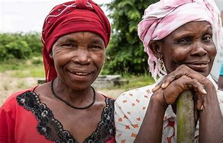

The NGO aims to provide all necessary help needed whenever needed. The services identifies the closet centre to you and connects you with the people of our facility that offer the following:
This service aims at providing free access to those in need of medical attention and are not able to afford the expenses. We specifically attend to matters such as:
Through it all despite the vision and mission of our NGO, one of our main priority is education. Ensuring youth empowerment for tomorrow's future. Our main goal is to instill fundamental skills development from an early stage of childhood, by equipping the children with educational programmes. In this sector, we encourage all persons from the age of 3-55, to be more involved and proactive in joining programmes that will self-enhance and empower the society for a better change.
Our service in feeding our community is to fulfil our purpose of reducing food insecurity, by redistributing well prepared food filled with wholesome nutrients, as well as decrease the chances of developing illnesses, reducing death expectancy, as well as poor educational outcomes due to poor nutritional intake of foods. Studies have indicated high levels of community vulnerablity in the country due to food insecurity. The figures shows that 20.6% of South Africans are vulnerable and malnurished, meaning that a total of 7.8 million people are vulnerable out of 39.6 million people.
We partnered up with Nosh Food Rescue, who help out with supplying in our feeding scheme project.
Nosh Food RescueOur services provide training to our youth and adults, as we embark to make a change in the community and lessen the crime rates posed by unemployement. The facility has joined partnership with Isaacs Center. As we have teamed up, our main goal is to provide sector-specific job training, internships, employment placement, as well as retention support. With Isaacs Center, the employment training programmes include:
* Advance and Earn/ Culinary Arts Training
* Information Technology
* Community Healtcare
* GED
* Case Management and Social Support
Isaacs Center